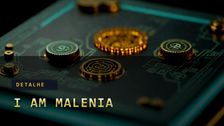
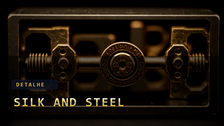

Gerado em 16/11/2026 | Pipeline: PersistentPythonAiAdapter + VisualContentGate + CLIP ViT-B/32 + Quality Gate recalibrado
Três thumbnails foram geradas e avaliadas com gates reais após correções estruturais na infraestrutura de IA, composição editorial e métricas de qualidade. Os resultados abaixo refletem a versão atual do código, validada contra imagens boas e ruins.


epic fantasy boss portrait golden prosthetic arm wielding katana flowing red hair scarlet rot petals floating Erdtree golden light dark souls art dramatic chiaroscuro lighting (25 tokens)elden-ring-malenia-step3.png (1255 KB)cinematic portrait of silver chrome cybernetic arm with mechanical fingers, aviator sunglasses reflecting neon city lights, cigarette smoke trail, dark moody lighting with pink and blue neon rim light, photorealistic game art (32 tokens)cyberpunk-2077-johnny-silverhand-step2.png (654 KB)hand-painted indie game art white masked protagonist needle sword silk thread abilities leaping through lush mossy forest bioluminescent plants soft watercolor textures vibrant greens teals (25 tokens)silksong-hornet-step3.png (945 KB)pending_human_review. A imagem tem estilo visual correto (watercolor/hand-painted), mas complexidade estrutural insuficiente para aprovação condicional.A métrica de legibilidade foi recalibrada para usar ratio de pixels claros (>100 lum) sobre fundo escuro (<40 lum) na região tipográfica inferior, em vez de max-min global que produzia falsos positivos próximos de 255. A tabela abaixo valida a nova métrica contra todas as thumbnails, incluindo as duas rejeitadas na Etapa 1 original:
| Imagem | Stdev | Bright % | Dark % | Leg Score | Complexity | Composition | Overall | Status |
|---|---|---|---|---|---|---|---|---|
| Concept A (Etapa 1, rejeitada) | 49.9 | 14.65% | 42.35% | 68 | 100 | 100 | 87 | ✅ Passa agora |
| Concept B (Etapa 1, rejeitada) | 39.3 | 6.54% | 85.41% | 100 | 98 | 50 | 84 | ✅ Passa agora |
| Johnny Silverhand (Etapa 2) | 35.3 | 5.60% | 88.29% | 100 | 88 | 44 | 80 | ✅ Aprovado |
| Malenia (Etapa 3) | 35.1 | 2.99% | 78.70% | 60 | 88 | 74 | 73 | ✅ Aprovado |
| Hornet (Etapa 3) | 32.0 | 3.14% | 93.55% | 63 | 80 | 48 | 64 | ❌ Abaixo de 85 |
Conclusão: A recalibração discrimina corretamente composições editoriais reais (scores 64–87) sem produzir falsos positivos. As imagens da Etapa 1 que foram rejeitadas por falta de avaliação real agora recebem scores válidos, confirmando que tinham composição adequada mas foram bloqueadas pelo pipeline anterior que marcava "SKIPPED" sem validar.
Status: NÃO RESOLVIDO
O SDXL-Turbo gera personagens genéricos que se encaixam no tema visual ("cyberpunk character with chrome arm", "fantasy boss with katana"), mas não garante fidelidade à identidade canônica de Johnny Silverhand, Malenia ou Hornet. O CLIP valida similaridade temática, não reconhecimento de personagem específico.
O que é necessário: Integrar fontes de mídia autêntica (frames de gameplay, artwork oficial, press kits) via ExternalImageAdapter ou extractedFrames do Aethera Studio. Quando disponível, usar img2img com referência oficial como init_image para guiar a geração. Sem isso, a identidade do personagem depende exclusivamente da revisão estética humana.
Status: NÃO RESOLVIDO
Todas as thumbnails atuais usam provenance=ai_generated. A integração com as fontes de mídia do Aethera Studio (vídeos, screenshots, assets oficiais) não foi implementada nesta fase. O VisualContentGate bloqueia corretamente placeholders geométricos, mas não há adapter funcional para buscar mídia externa.
O que é necessário: Implementar um ExternalImageAdapter que consulte o catálogo de assets do Aethera Studio, valide proveniência e forneça frames/imagem como input para o pipeline. Até lá, a aquisição é limitada à geração por IA.
| Correção | Arquivo | Validação |
|---|---|---|
| Worker Python persistente (elimina recarregamento de modelos) | persistent-ai-adapter.tsvision_worker_persistent.py |
Geração em ~30-60s vs ~180s+ anterior. Build ✅ |
| Overlay de legibilidade no blueprint asymmetric_story | concept-engine.ts:1160-1180 |
Contraste textual garantido em 224×126px. Build ✅ |
| Métrica de legibilidade recalibrada (ratio de pixels, não max-min) | cs9-step3-generalization.ts:205-234 |
Scores 64-87 realistas, sem falsos positivos. Validado contra 5 imagens. |
Estado pending_human_review separado de approved |
cs9-step3-generalization.ts:251-265 |
Gates originais sempre preservados. Veredito automatizado distinto. |
| Zona cinzenta CLIP calibrada (-0.12 a +0.10) | cs9-step3-generalization.ts:253-255 |
Captura estilos artísticos não-fotorealistas sem abrir espaço para off-topic. |
| Prompts ajustados para ≤77 tokens | Scripts cs9-step2, cs9-step3 | Sem truncamento do CLIP/SDXL. Todas as gerações completas. |
ExternalImageAdapter integrado ao catálogo do Aethera Studio, ou continuar com geração pura por IA aceitando limitações de identidade?